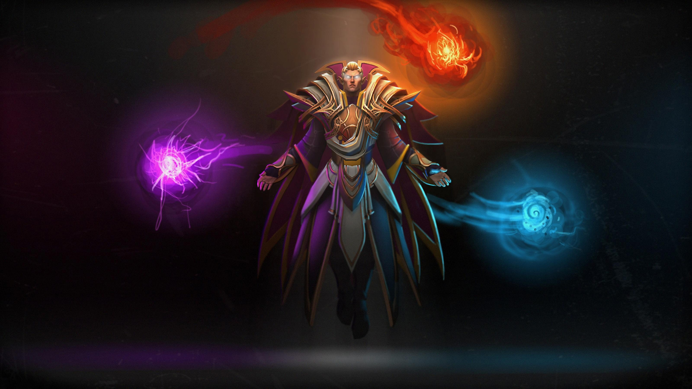
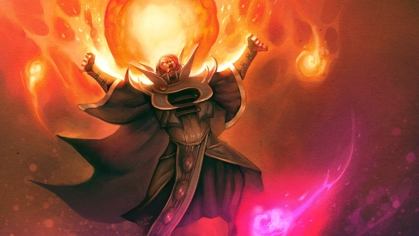
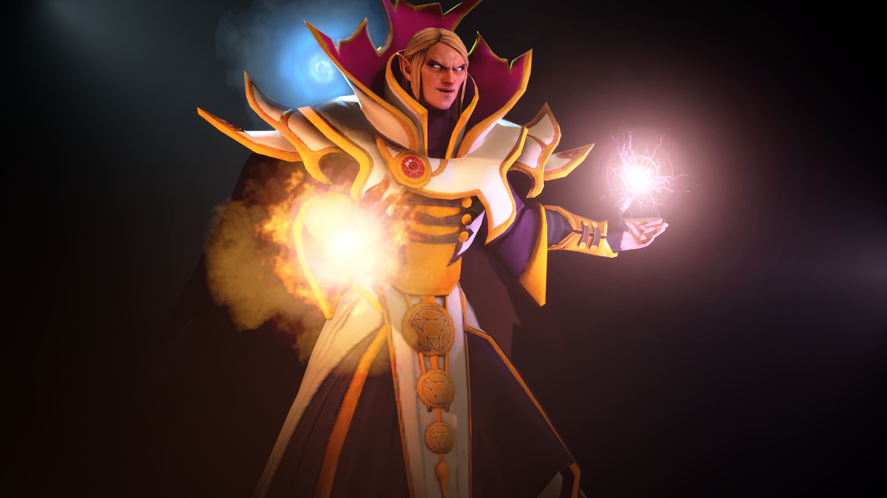
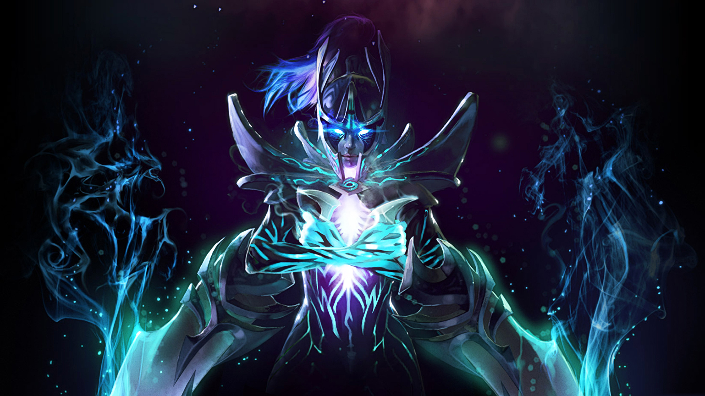
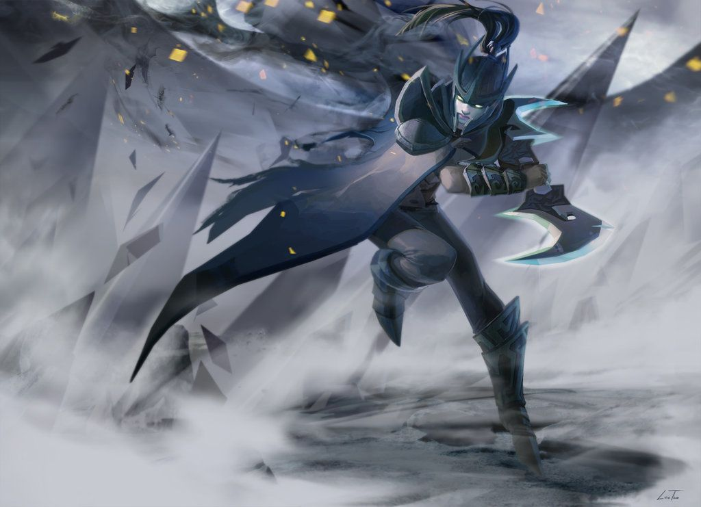
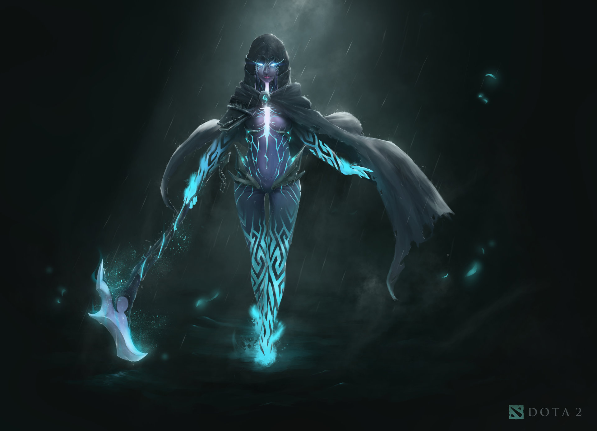

DOTA 2
INVOKER
Cerita atau Kisah INVOKER!!
Ada yang bilang, penyihir terkuat di dunia Dota 2 adalah Invoker, yang bahkan kuatnya mampu mengalahkan Aghanim. Tidak ada yang tahu juga dari mana Invoker berasal, bahkan nama aslinya pun tidak banyak yang mengenalnya! Cerita Dota 2 Invoker berawal dari sihir (magic), entitas tertua yang tercipta bersamaan dengan alam semesta. Di setiap elemen yang eksis di semesta ini, terdapat sihir di dalamnya.

Kekuatan sihir sangat ekstrem, ia mampu membentuk dan menghancurkan apapun. Kekuatan seperti itu pada awalnya tidak ada yang mampu mengira bisa dikendalikan, namun ketika zaman semakin maju para pengguna sihir semakin banyak di dunia!

Sebelum kehancuran Mad Moon, yang juga menandakan perang antara Radiant dan Dire dimulai manusia berlomba-lomba mempelajari sihir menggunakan banyak instrumen. Namun ada satu manusia yang mampu belajar lebih cepat daripada yang lain, ia adalah Garral. Kemampuan Garral dalam menyerap ilmu sihir sungguh luar biasa! Ketika para sesepuh lainnya dengan susah payah menghabiskan hidupnya untuk mempelajari satu dua spell, namun Garral, seorang pemuda dari sebuah desa, sudah menguasai banyak ilmu sihir. Bahkan banyak yang mengklaim, ketika ia masih anak-anak, sihir yang ia kuasai sudah lebih banyak dari para penyihir senior! Karena hal itu, Garral dikenal sebagai seorang pemuda dengan pikiran yang tidak memiliki batasan. Jenius!
Namun, Garral, yang kini dikenal dengan Carl, menganggap pengubahan nama ini menjadi kesempatan baik baginya untuk memulai kehidupan baru. Cerita Dota 2 Invoker pun kini menuju ke babak baru. Di universitas, Carl kembali lagi merasa bahwa ini terlalu mudah baginya. Meskipun ia bahagia mempelajari banyak sihir baru, akan tetapi tetap saja, kemampuannya mengolah ilmu sihir sudah melewati seluruh murid di sana, bahkan gurunya sekalipun! Pada suatu sore di perpustakaan universitas, Carl menjumpai sebuah buku dengan judul “Sempiternal Cantrap”. Ternyata, buku tersebut berisi rahasia ilmu sihir yang membuat siapapun yang menguasai, bisa hidup abadi, alias immortal!

Dengan mudah, Carl menguasai ilmu tersebut, dan dirinya kini tidak akan menua meskipun ribuan tahun lamanya! Rupanya benar apa yang dikatakan oleh Auriel, Gyrocopter, kalau umur Invoker itu ratusan kali lipat dari umur dirinya. Berabad-abad berlalu, reputasi Carl kini sudah dikenal oleh seluruh penyihir di dunia. The Hidden Council kemudian memanggilnya untuk menghadap dan setuju memberikan gelar Magus kepada Carl, yang kemudian ia gunakan sebagai nama barunya, Arsenal Magus. Pemilihan nama Arsenal Magus bukanlah tanpa alasan. Ia memilih nama itu karena penguasaannya terhadap ilmu-ilmu sihir yang bersifat menghancurkan!

Perjalanan Arsenal Magus pun berlanjut, dan semakin lama, pengetahuannya tentang sihir semakin sempurna! Bisa dikatakan pada suatu titik ia mampu menguasai sihir bahkan hingga tingkat alam semesta atau kosmos. Terbukti dari kemampuannya, Arsenal Magus mampu mendaratkan meteor, meminjam kekuatan matahari untuk menyerang lawannya, hingga menciptakan gunung es! Kemampuannya yang sangat mengerikan itu membuat Arsenal Magus mengubah kembali namanya menjadi Invoker. Kini, alasannya ia berperang sederhana untuk memamerkan kekuatan sihirnya yang luar biasa kepada lawan-lawannya!
PHANTOM ASSASIN
Cerita atau Kisah PHANTOM ASSASIN!!
Phantom Assassin adalah hero agility yang juga termasuk ke dalam seorang hard carry. Di awal permainan, ia memang lemah dan tidak bisa berbuat banyak. Tapi menginjak late game, dan ketika item-nya sudah jadi, ia bisa one hit kill lawannya! Namun, di balik gelarnya itu, Mortred memiliki kisah yang misterius dan sangat menarik untuk dibahas! Penasaran? Yuk langsung saja disimak cerita Dota 2 Phantom Assassin berikut ini!

Cerita Dota 2 Phantom Assassin semua dimulai dari organisasi Sisters of the Veil. Organisasi tersebut adalah sebuah kelompok pembunuh, atau assassin, yang anggotanya semua adalah wanita. Konon, perekrutan anggota Sisters of the Veil pun sangat mengerikan! Mereka menculik anak perempuan yang masih sangat muda umurnya, dan diyakini oleh para tetua Sisters of the Veil memiliki kemampuan supernatural! Di usianya yang masih sangat muda, Mortred pun diculik oleh Sisters of the Veil ke dalam organisasi. Di sana, ia “dicuci otaknya” oleh Sisters of the Veil untuk menjadi seorang, ah bukan, lebih tepat disebut sebagai alat untuk membunuh. Mengapa demikian? Karena assassin Sisters of the Veil memang dididik hanya untuk membunuh saja, dan harus menuruti perintah secara absolut. Mereka tidak boleh menolak, atau bahkan melontarkan petanyaan!

Cerita Dota 2 Phantom Asassin pun berlanjut. Mortred, yang saat itu merupakan anggota Sisters of the Veil, mendapatkan siapa target sasarannya melalui meditasi. Dari meditasi itu, ia akan mendapatkan penglihatan supernatural yang menggambarkan targetnya. Mortred tidak menerima kontrak dari siapapun, atau imbalan sepeserpun. Ia melakukan pembunuhan karena memang itulah budaya dan tradisi dari Sisters of the Veil. Mortred tidak memandang kasta, pangkat, ataupun ras dari korbannya. Assassin dari Sisters of the Veil semuanya memiliki jubah unik, yaitu Phantom Veil, yang diberikan ketika mereka sudah lulus dari pelatihannya dan siap mengemban misi pertamanya. Ketika mereka mengenakan Phantom Veil, tidak ada seorang pun yang mengingat nama dan masa lalunya! Mereka memang telah diciptakan hanya untuk satu tujuan saja, yaitu membunuh siapa saja tanpa pertanyaan. Namun, Mortred rupanya unik! Ia tidak seperti saudarinya yang sudah tidak memiliki identitas. Di dalam cerita Dota 2 Phantom Assassin, ternyata Mortred masih mendengar bisikan-bisikan misterius tentang namanya, yakni “Mortred”. Lama-lama, bisikan itu pun semakin kuat dan ia kemudian sadar kalau dirinya memiliki masa lalu, yang sayangnya belum bisa ia ingat.
